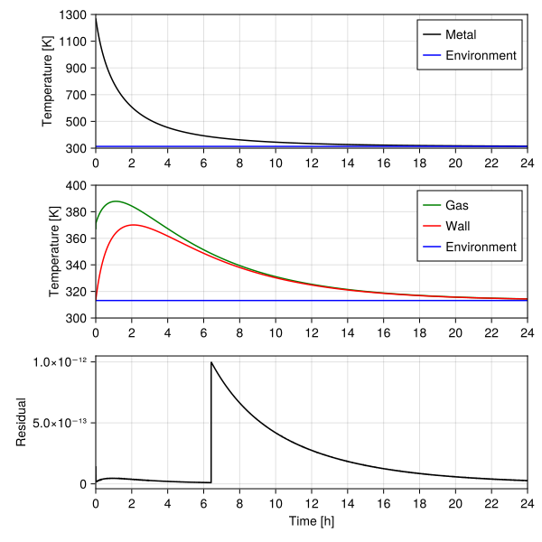

using CairoMakie
using LinearAlgebra
using Printf
using Unitful
# Stefan-Boltzmann constant.
const σ = 5.67e-08u"W/(m^2*K^4)";Transient heat transfer
No further words, let’s start by importing the required toolset:
First problem
Implementation of section 2.3 of Nithiarasu et al. (2016) of a transient heat transfer problem. This is the logical extension of what has been explored in a previous study. The overall problem is stated in terms of the inertia matrix \(\mathbf{C}\), the stiffness \(\mathbf{K}\) and the forcing function \(\mathbf{f}\). The following first order differential equation of temperature \(\mathcal{T}\) is to be solved:
\[ \mathbf{C}\dot{\mathcal{T}}+\mathbf{K}\mathcal{T}=\mathbf{f} \]
Notice here that the temperature \(\mathcal{T}\) here is a vector corresponding to the three problem components, the steel part, the furnace gas, and the outer refractory walls.
Because the model is stated in lumped form, i.e. simplified to a zero-dimensional space, we add a phase of calculation of the heat capacities of materials in compatible units to remain within the formulation proposed in the reference. In this lumped format, the elements of matrix \(\mathbf{C}\) are given in units of energy per unit temperature because they already incorporate the effect bodies masses through \(C_{i,i}=m_i{}c_{P,i}\) where \(i\) indicates de component index.
To get a dynamics that is interpretable in the real world we will start by computing reasonable orders of magnitude of the \(C_{i,i}\) by providing the masses of the bodies and typical values of specific heats for the involved materials. Considering a steel sphere of 10 cm placed floating in a 40 cm air environment limited by a spherical refractory with outer shell of 60 cm we can estimate these masses, in the same order, as:
m = 1u"kg" * [4.2, 0.033, 240.0];Next we provide the specific heats of the materials already multiplied by the above masses:
cp(T) = m[1] * 6.00e+03u"J/(kg*K)"
cg(T) = m[2] * 1.00e+03u"J/(kg*K)"
cw(T) = m[3] * 9.00e+02u"J/(kg*K)";Since our goal is to make the problem fully treated in matrix form, we stack the specific heats together. Since matrix \(\mathrm{C}\) is diagonal and composed by these specific heats, its inverse is simply the reciprocal of its diagonal elements, what is trivial to prove. This allows the problem to be reworked as
\[ \dot{\mathcal{T}}+\mathbf{C}^{-1}\mathbf{K}\mathcal{T}=\mathbf{C}^{-1}\mathbf{f} \]
Setting the derivative term to be alone could be interesting for testing different time-stepping strategies, for instance. Matrix \(\mathrm{C}^{-1}\) is provided by inertiainv below:
specificheat(T) = [cp(T[1]); cg(T[2]); cw(T[3])]
inertiainv(T) = diagm(1 ./ specificheat(T));We inspect the inverse inertia matrix:
inertiainv([300.0, 300.0, 300.0])3×3 Matrix{Quantity{Float64, 𝚯 𝐓^2 𝐋^-2 𝐌^-1, Unitful.FreeUnits{(J^-1, K), 𝚯 𝐓^2 𝐋^-2 𝐌^-1, nothing}}}:
3.96825e-5 K J^-1 0.0 K J^-1 0.0 K J^-1
0.0 K J^-1 0.030303 K J^-1 0.0 K J^-1
0.0 K J^-1 0.0 K J^-1 4.62963e-6 K J^-1Stiffness matrix \(\mathrm{K}\) in this problem provides the convective heat transfer terms. It is given by
\[ \mathbf{K} = \begin{bmatrix} h_pA_p & -h_pA_p & 0 \\ -h_pA_p & h_pA_p + h_gA_g & -h_gA_g \\ 0 & -h_gA_g & h_gA_g + h_wA_w \end{bmatrix} \]
Since this matrix does not contain any element that depends on temperature it needs to be computed only once and we will not seek an optimized way to evaluate it. The code below is generic for any layered structure as the one being modelled here. Notice that the pairwise interactions lead to a tridiagonal structure.
function stiffness(h, A)
p = @. h * A
q = -1 * p[1:end-1]
p[2:end] -= q
return diagm(0=>p, -1=>q, 1=>q)
end;For testing its implementation and later simulating the system we provide already the set of convective heat transfer coefficients on h and heat transfer areas in A. The order of magnitude of areas was kept compatible with the geometrical description provided before.
h = [100.0, 100.0, 10.0] * 1u"W/(m^2*K)"
A = [0.032, 0.500, 1.15] * 1u"m^2"
stiffness(h, A)3×3 Matrix{Quantity{Float64, 𝐋^2 𝐌 𝚯^-1 𝐓^-3, Unitful.FreeUnits{(K^-1, W), 𝐋^2 𝐌 𝚯^-1 𝐓^-3, nothing}}}:
3.2 W K^-1 -3.2 W K^-1 0.0 W K^-1
-3.2 W K^-1 53.2 W K^-1 -50.0 W K^-1
0.0 W K^-1 -50.0 W K^-1 61.5 W K^-1To conclude problem specification, a function forcing for evaluation of \(\mathbf{f}\) is provided below. Vector \(\mathbf{f}\) is mainly where the description of radiative heat transfer is represented and is given as:
\[ \mathbf{f} = \begin{bmatrix} -\epsilon_{p}\sigma{}A_p(\mathcal{T}_p^4-\mathcal{T}_w^4) \\ 0 \\ h_wA_wT_a + \epsilon_{p}\sigma{}A_p(\mathcal{T}_p^4-\mathcal{T}_w^4) - \epsilon_{w}\sigma{}A_w(\mathcal{T}_w^4-T_a^4) \end{bmatrix} \]
function forcing(T, h, A, Ta, ϵp, ϵw)
f1 = -ϵp*σ*A[1]*(T[1]^4-T[3]^4)
f3 = h[3]*A[3]*Ta - f1 - ϵw*σ*A[3]*(T[3]^4 - Ta^4)
return [ f1; 0u"W"; f3 ]
end;The remaining parameters to close the problem are the emissivity of the materials and external temperature, all provided below.
ϵp = 0.8
ϵw = 0.3
Ta = 313.15u"K"
forcing([Ta, Ta, Ta], h, A, Ta, ϵp, ϵw)3-element Vector{Quantity{Float64, 𝐋^2 𝐌 𝐓^-3, Unitful.FreeUnits{(W,), 𝐋^2 𝐌 𝐓^-3, nothing}}}:
-0.0 W
0.0 W
3601.225 WWith that last element of the base equation in hands we can derive the time-stepping approach to be used. The derivative term is expanded as a forward finite difference as
\[ \frac{\mathcal{T}_{n+1}-\mathcal{T}_n}{\tau} + \mathbf{L}^\prime\mathcal{T} =\mathbf{R}^\prime\mathbf{f} \]
If you go back to the inspection of the inverse inertia matrix above, you will observe that the term corresponding to the gas is about 3 orders of magnitude above the others. That means that the dynamics of that component of the system is much slower than the others and the problem is somewhat stiff. To introduce a first layer of robustness in the integration we can try an implicit scheme by evaluating all terms in the above equation at instant \(n+1\):
\[ \mathcal{T}_{n+1}-\mathcal{T}_n + \tau\mathbf{L}^\prime_{n+1}\mathcal{T}_{n+1} =\tau\mathbf{R}^\prime_{n+1}\mathbf{f}_{n+1} \]
This equation can be rearranged by splitting linear terms in \(\mathcal{T}_{n+1}\) on the left-hand side as:
\[ \left(\mathbf{I}+\tau\mathbf{L}^\prime_{n+1}\right)\mathcal{T}_{n+1}= \tau\mathbf{R}^\prime_{n+1}\mathbf{f}_{n+1}+\mathcal{T}_n \]
this can be further simplified with the notation:
\[ \mathbf{L}_{n+1}\mathcal{T}_{n+1}=\mathbf{R}_{n+1}+\mathcal{T}_n \]
It is useful to simplify thing until last step because it tells us what functionalities we need in a computer implementation. The problem of finding \(\mathcal{T}_{n+1}\) can be seem as a nonlinear iteration \(\mathcal{T}_{n+1}=L^{-1}_{n+1}(R_{n+1}+\mathcal{T}_{n})\) followed by update of both \(\mathbf{L}_{n+1}\) and \(\mathbf{R}_{n+1}\) with the new estimate of temperatures. Thus, we need functions to update both these matrices during the solution. Since these rely on several parameters we can encapsulate then in a higher order function with all fixed parameters and return a function that performs the update for the new temperature estimate, as implemented below.
function buildlhsmatrix(τ, h, A)
K = stiffness(h, A)
I = diagm([1, 1, 1] * 1u"1")
return (Tₖ) -> I + τ * inertiainv(Tₖ) * K
end;function buildrhsvector(τ, h, A, Ta, ϵp, ϵw)
F(T) = τ * forcing(T, h, A, Ta, ϵp, ϵw)
return (Tₖ) -> inertiainv(Tₖ) * F(Tₖ)
end;As per the previous discussion, the following snipped emulates one time-step iteration:
T = [1273.0u"K", Ta, Ta]
τ = 1.0u"s"
K = buildlhsmatrix(τ, h, A)
B = buildrhsvector(τ, h, A, Ta, ϵp, ϵw)
# Because of factorization this does not works with Unitful.
# Units are stripped and system becomes inconsistent.
# Tnew = K(T) \ (B(T) .+ T)
Tnew = inv(K(T)) * (B(T) .+ T);Function steptime below performs up to a maximum number of iterations as illustrated above and checks for convergence of the time-step.
function steptime(T₀, K, B; maxiter = 50, rtol = 1.0e-12, β = 1.0)
Tᵢ = copy(T₀)
Tⱼ = copy(T₀)
Δ = 9.0e+100
for j in range(1, maxiter)
Tⱼ[:] = inv(K(Tⱼ)) * (B(Tⱼ) .+ T₀)
Tⱼ[:] = relaxation(Tᵢ, Tⱼ, β)
Δ = residual(Tᵢ, Tⱼ)
Tᵢ[:] = Tⱼ[:]
if Δ < rtol
return Tᵢ, j, Δ
end
end
@warn("No convergence during step @ $(@sprintf("%.6e", Δ))")
return Tᵢ, maxiter, Δ
end;A relaxation step for eventually helping convergence was introduced above as:
relaxation(Tᵢ, Tⱼ, β) = @. β * Tⱼ + (1-β) * Tᵢ;A common choice of residual in this sort of problem is the maximum relative absolute change:
residual(Tᵢ, Tⱼ) = maximum(abs.(Tⱼ .- Tᵢ) ./ Tᵢ);Time integration is now just a matter of repeating time-stepping and storing solution:
function integrate(t, T, K, B; maxiter, rtol, β)
U = copy(T)
nvars = length(T)
solution = zeros(length(t), nvars + 2)
solution[1, 1:nvars] = ustrip(U)
for (i, tᵢ) in enumerate(t[1:end])
(U[:], niters, Δ) = steptime(U, K, B; maxiter, rtol, β)
solution[i, 1:nvars] = ustrip(U)
solution[i, nvars+1] = niters
solution[i, nvars+2] = Δ
end
return solution
end;This completes the tooling for simulation of the process. Below we simulate 24 hours of the dynamics starting with a hot metallic sphere and the furnace equilibrated with the external environment.
tend = 24*3600
T = [1273.0u"K", Ta, Ta]
t = range(0, tend, convert(Int64, tend / 8))
τ = step(t) * 1u"s"
K = buildlhsmatrix(τ, h, A)
B = buildrhsvector(τ, h, A, Ta, ϵp, ϵw)
maxiter = 80
rtol = 1.0e-12
β = 0.99
@time solution = integrate(t, T, K, B; maxiter, rtol, β); 0.535226 seconds (4.53 M allocations: 264.591 MiB, 20.33% gc time, 151.48% compilation time)In Figure 1 we can inspect the solution and the residuals at the end of each time-step. For the solution to make sense it is important that every single step must converge during time advancement. Note the leap in gas temperature during the first time steps resulting from the problem stiffness. As a matter of fact, a smaller time-step should have been used for properly resolving its dynamics in the early stages or even better, an adaptative time-stepping approach should have been adopted.
with_theme() do
tk = t / 3600
fig = Figure(size = (600, 600))
ax1 = Axis(fig[1, 1])
lines!(ax1, tk, solution[:, 1]; color = :black, label = "Metal")
hlines!(ax1, ustrip(Ta); color = :blue, label = "Environment")
axislegend(ax1; position = :rt)
ax2 = Axis(fig[2, 1])
lines!(ax2, tk, solution[:, 2]; color = :green, label = "Gas")
lines!(ax2, tk, solution[:, 3]; color = :red, label = "Wall")
hlines!(ax2, ustrip(Ta); color = :blue, label = "Environment")
axislegend(ax2; position = :rt)
ax3 = Axis(fig[3, 1])
lines!(ax3, tk, solution[:, 5]; color = :black)
ax3.xlabel = "Time [h]"
ax1.ylabel = "Temperature [K]"
ax2.ylabel = "Temperature [K]"
ax3.ylabel = "Residual"
ax1.xticks = 0:2:tk[end]
ax2.xticks = 0:2:tk[end]
ax3.xticks = 0:2:tk[end]
ax1.yticks = 300:200:1300
ax2.yticks = 300:20:400
xlims!(ax1, extrema(ax1.xticks.val))
xlims!(ax2, extrema(ax2.xticks.val))
xlims!(ax3, extrema(ax3.xticks.val))
ylims!(ax1, extrema(ax1.yticks.val))
ylims!(ax2, extrema(ax2.yticks.val))
fig
end
Using ModelingToolkit
In the future…